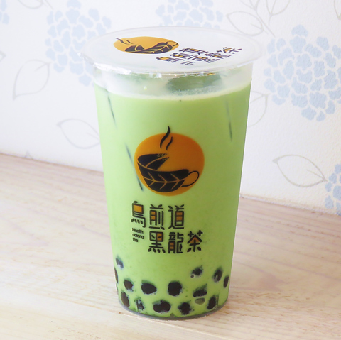

抹茶ミルクティー
抹茶ミルクティーは、ほどよい苦味と甘みが感じられて、大人向けの味わいが楽しめます。 そこまで抹茶感が強くない（粉っぽくない）ので、幅広いファンに飲みやすいように作られています。 年齢・性別問わず人気が高いドリンクメニューです
ミルクフォームブラックティー
ミルクフォームブラックティーは、レギュラーメニューの「ブラックティー」に、ミルクフォームをトッピングした商品。 ミルクティーのようなまろやかさと、ブラックティーのスッキリした口当たりが一度に味わえるドリンクメニューです。 ミルクフォームとドリンクを混ぜて飲むと「岩塩ブラックティーティー」のような味わいが感じられます。